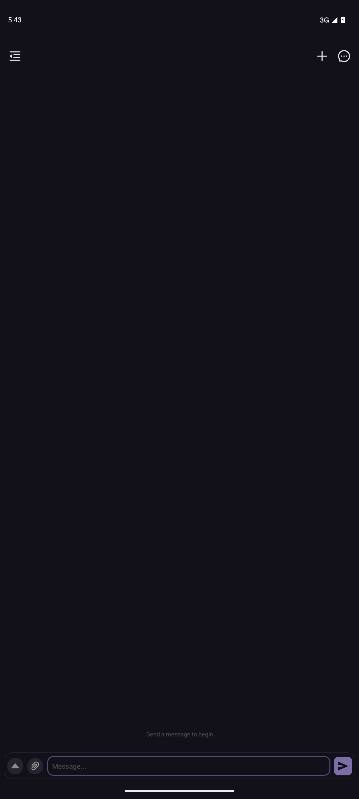
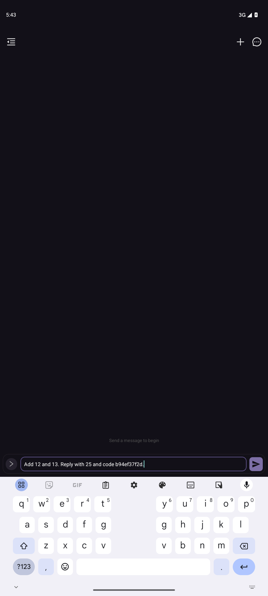

entered

[]
Native text is not automatically pixel-confirmed. Captures are sequential; review screenshots. No legal compliance verdict.
{
"package": "com.Vali98.ChatterUI",
"mode": "live_adb",
"fixture": false,
"nonce": "b94ef37f2d",
"status": "blocked_or_failed",
"input_verified": true,
"new_output_verified": false,
"ai_model_quality": "not_assessed",
"legal_compliance": "not_assessed",
"stable_polls_required": 2,
"entry_mode": "already_open",
"error": "Command '['G:\\\\Android\\\\Sdk\\\\platform-tools\\\\adb.exe', '-s', 'emulator-5556', 'shell', 'cat /sdcard/aigui_eb9cbaaeeefe4735af95a344d34a78d1.xml']' returned non-zero exit status 1."
}
[]
[]

[]